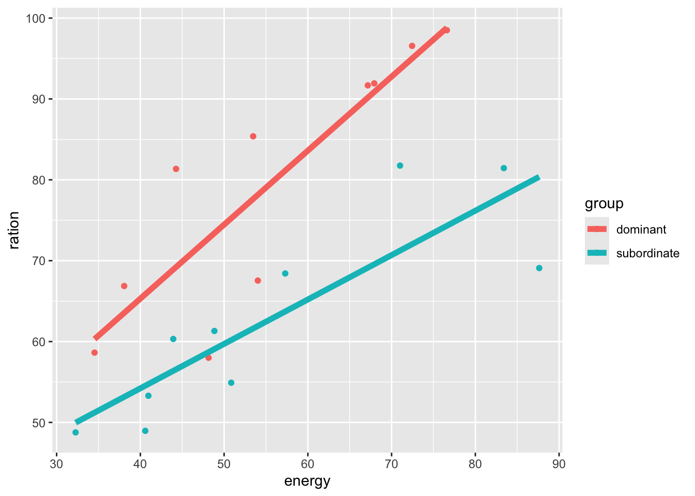
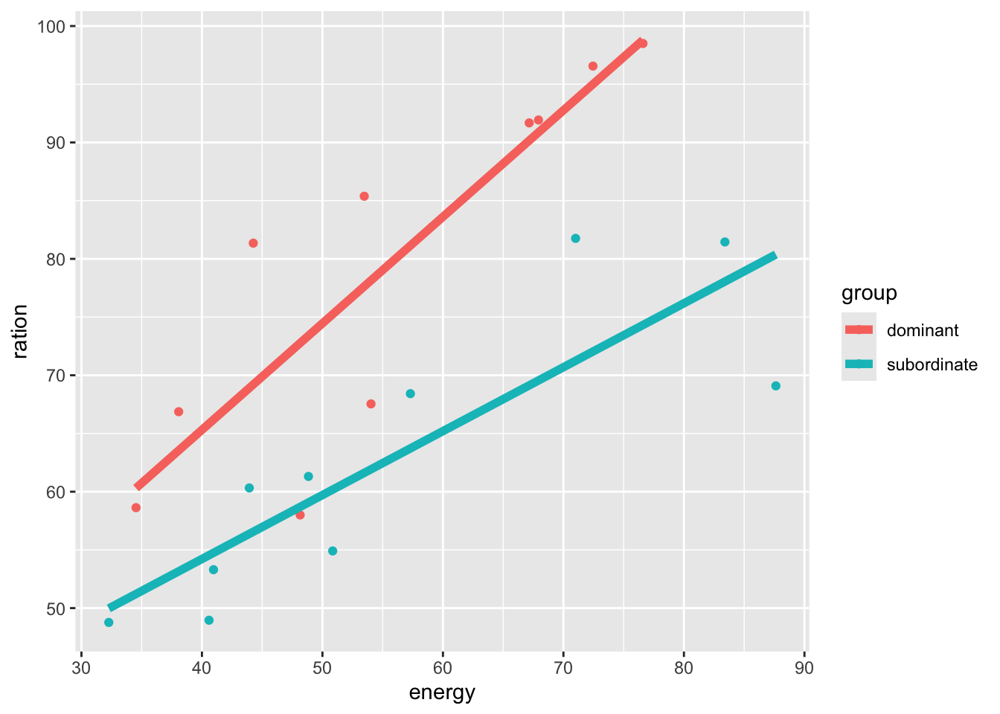

1.7 Including factors in linear models
1.7.2 Comparing regression lines: analysis of covariance
The terminology blocks is used to describe a factor which influences the response variable, but is not a primary interest in the experiment. This can also happen with continuous measurements. Two examples in this section illustrate how the inclusion of an appropriate covariate in an analysis can help to deliver an appropriate comparison of treatment groups, and prevent inappropriate conclusions being drawn.
Example: Rainbow trout
When the behaviour of a group of trout is studied, some fish are observed to become dominant and others to become subordinate. Dominant fish have freedom of movement while subordinate fish tend to congregate in the periphery of the waterway and to avoid crossing the path of the dominant fish. Data on energy expenditure and ration of food were collected as part of a laboratory experiment. The data are available in the filedata/trout.dat. Both energy expenditure and food ration are measured in units of kilocalories per trout per day.A detailed description of the experiment and an analysis of a more extensive set of data are provided by Metcalfe (1986), Intraspecific variation in competitive ability and food intake in salmonids: consequences for energy budgets and growth rates, Journal of Fish Biology 28, 525–31.
Is there evidence of a difference in food ration between dominant and subordinate fish?
The left hand panel below uses boxplots to give a direct comparison between the rations gained by the two groups of fish. This does suggest there may be a difference in mean values. The middle panel shows a plot of ration against expenditure, with a separate regression line for each group. Now the two groups are almost completely separated. The final plot fits a model which assumes the slopes of the two lines are identical.
path <- rp.datalink("trout")
trout <- read.table(path, header = TRUE)
library(ggplot2)
model1 <- lm(ration ~ group, data = trout)
model2 <- lm(ration ~ group * energy, data = trout)
model3 <- lm(ration ~ group + energy, data = trout)
ggplot(trout, aes(group, ration)) + geom_boxplot()
ggplot(trout, aes(energy, ration, col = group)) + geom_point() +
geom_line(aes(energy, fitted(model2)), linewidth = 2)
ggplot(trout, aes(energy, ration, col = group)) + geom_point() +
geom_line(aes(energy, fitted(model3)), linewidth = 2) 

## Estimate Std. Error t value Pr(>|t|)
## (Intercept) 79.644 4.422643 18.008235 5.843017e-13
## groupsubordinate -16.815 6.254562 -2.688438 1.501569e-02## Estimate Std. Error t value Pr(>|t|)
## (Intercept) 28.7070826 9.806857 2.9272461 9.866556e-03
## groupsubordinate 3.5475060 12.515835 0.2834414 7.804732e-01
## energy 0.9150618 0.170874 5.3551863 6.440794e-05
## groupsubordinate:energy -0.3659327 0.216484 -1.6903454 1.103471e-01## Estimate Std. Error t value Pr(>|t|)
## (Intercept) 41.3977252 6.6451243 6.229789 9.149947e-06
## groupsubordinate -16.8239320 3.5566779 -4.730238 1.933996e-04
## energy 0.6870794 0.1104972 6.218068 9.360456e-06In the model summaries above, the simple comparison of groups shows a significant difference, with an estimated difference of 16.82. The model with separate regression lines shows that the interaction (allowing a different slope for each line) is not significant (see the term labelled groupsubordinate:energy). That suggests that we should consider the model with parallel regression lines. This also estimates the difference between the two groups, after adjusting for energy, to be 16.82.
So what advantage has there been here in fitting energy as a covariate? The answer lies in the precision of the estimates. For the simple comparison of groups the standard error is 6.25 while in the parallel regression lines model it is 3.56. So we are able to estimate the difference between the groups with greatly increased precision.
It would be easy to imagine cases where the simple group comparison was not significant but became so after including a suitable covariate.
Example: Respiratory distress syndrome
Premature babies often suffer from a variety of problems, of which a major one is respiratory distress syndrome (RDS). It is thought that the occurrence of this syndrome might be related to a property of the blood called red cell deformability. This refers to the ability of red cells to change shape to pass through small pores. The rate (lrate, on a log scale) of blood flow through a set of three micrometre pores was recorded for two groups (group) of babies, some of whom suffered from respiratory distress syndrome and some who did not. The gestational age (GA) in weeks of each baby was also recorded.Is there evidence of a difference in
lratebetween the two groups?These data were kindly provided by Dr. Haider, Queen Mother’s Hospital, Glasgow. The data are available through
rp.datalink('rds').
path <- rp.datalink('rds')
rds <- read.table(path, header = TRUE)
library(ggplot2)
model1 <- lm(lrate ~ RDS, data = rds)
model2 <- lm(lrate ~ RDS * GA, data = rds)
model3 <- lm(lrate ~ RDS + GA, data = rds)
ggplot(rds, aes(RDS, lrate)) + geom_boxplot()
ggplot(rds, aes(GA, lrate, col = RDS)) + geom_point() +
geom_line(aes(y = fitted(model2)), linewidth = 2)
ggplot(rds, aes(GA, lrate, col = RDS)) + geom_point() +
geom_line(aes(y = fitted(model3)), linewidth = 2)
The three plots above again compare the groups directly, then adjust for the effects of gestational age with separate regression lines, and then lines with common slope. There are strikingly different results. Look at summaries of the three models to see that the direct group comparison (model1) shows a (just) significant result, while model2 shows no evidence of interaction between group and gestational age and model3 shows no evidence of a difference between the groups. So this is a case where the inclusion of a covariate prevents us from drawing an inappropriate conclusion of a group difference when in fact this is due the dominance of later gestational ages in the babies who do not have RDS.
> Another example - with several covariates?
> Trigonometric regression?